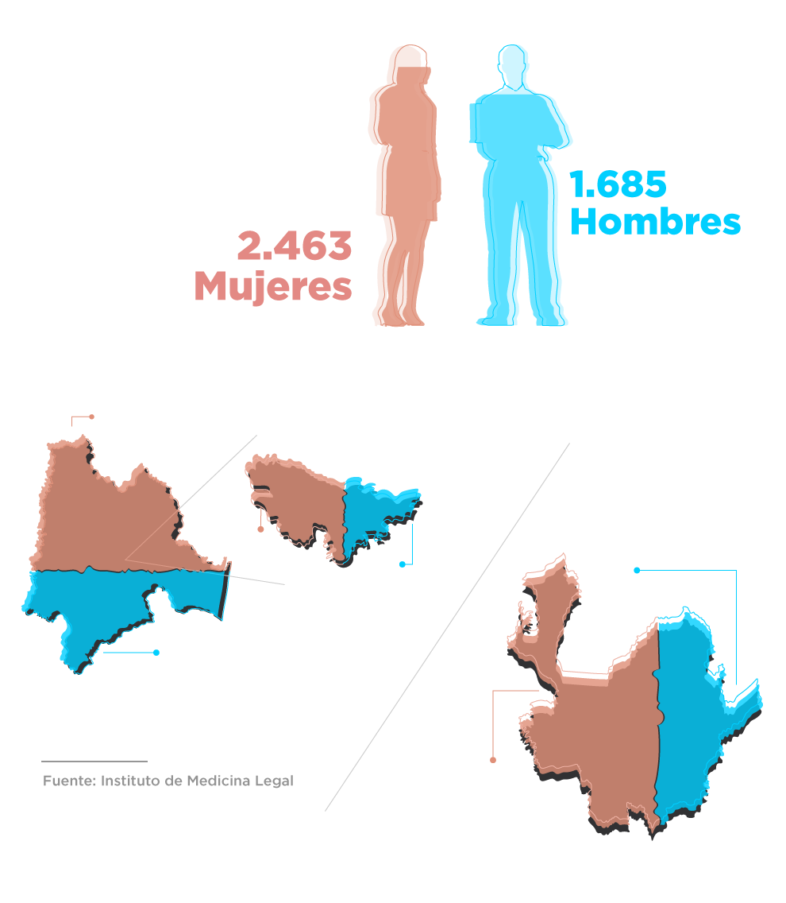
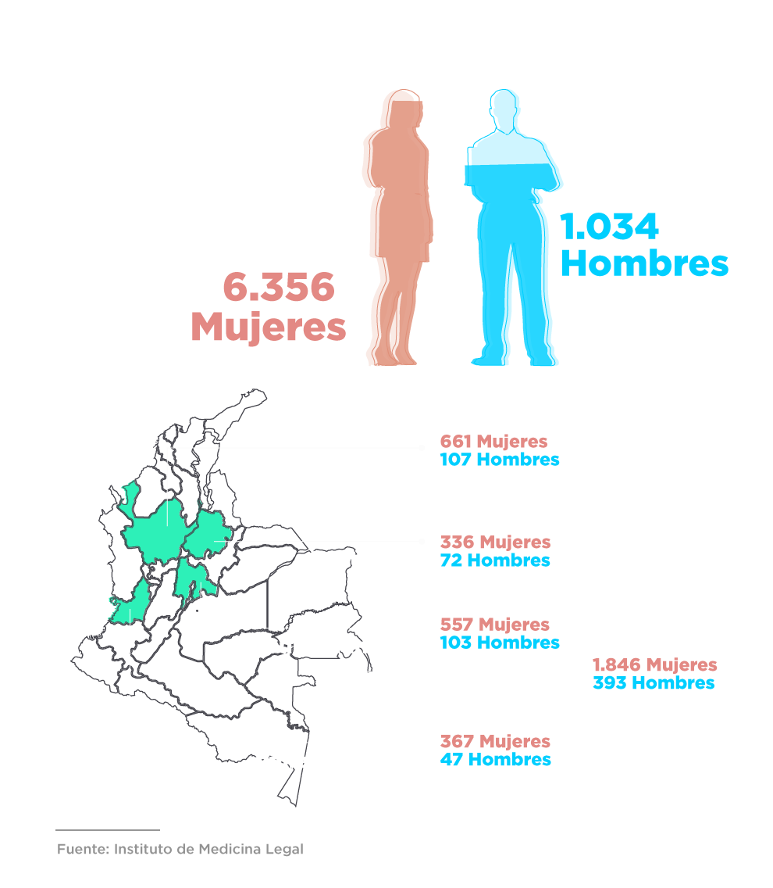
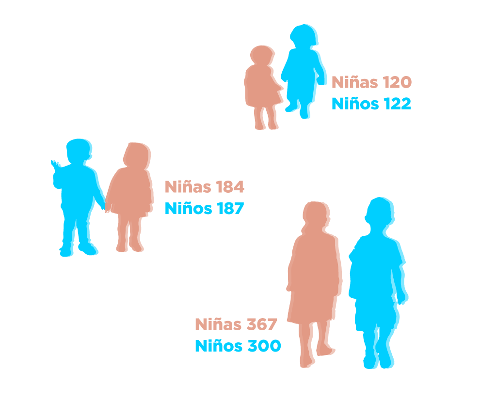

Para denunciar:
Acudir a las URI y a los Centros de Atención Especializada
Celular: 122 *Opción 2
Teléfono fijo:
En Bogotá: 5702000 Opción 7 y 2 / Línea nacional: 018000 919748 Opción 2
Correo: DenunciaAnonima@fiscalia.gov.co
Los gritos llamaron su atención. Era una mujer adulta quien insultaba a otra de la tercera edad. Ocurría en una terraza de una casa en el sur de Bogotá. Alguien, cerca de allí, oía. Era un ciudadano anónimo que denunció en twitter la dolorosa situación. Apenas se cumplían doce días de la cuarentena obligatoria para los mayores de 70 años.
“Con lágrimas en mis ojos, debo hacer esta denuncia pública para que se viralice en Colombia. Hoy estaba trabajando en el barrio Colón de Bogotá, y escuché unos gritos e insultos de una señora. La hija estaba bañando a la mamá”.
Esto fue el 4 de abril, a las 6:05 de la tarde y las imágenes -que no replicamos por respeto a la dignidad de la mujer- la dejan ver desnuda e indefensa. Los reportes indican que ese día Bogotá estaba por debajo de los 13 grados.
El usuario de twitter se preguntaba en un hilo de imágenes y comentarios si esto podría tomarse como maltrato.
La respuesta es sí. Y aún más que eso, es violencia intrafamiliar.
La denuncia ciudadana llegó a Oficina de Integración Social. Los funcionarios visitaron la vivienda y decretaron medida de protección para la señora de 94 años. También le fueron ordenados exámenes en el Instituto de Medicina Legal para establecer su estado de salud y las posibles secuelas ocasionadas por el maltrato. Para protegerla, la anciana fue dejada al cuidado de otra de sus hijas, en el barrio Kennedy.
La situación de esta mujer no es excepcional. En Bogotá, entre el 31 de marzo y el 30 de junio, las comisarías de familia atendieron de manera presencial a 6.425 personas por violencia intrafamiliar.
Solo en junio fueron atendidas 2.377 víctimas, el 37% del total. De ellas 81 eran hombres y 67 mujeres, todos mayores de 60 años.
Y tampoco se trata de un caso aislado, o exclusivo de la capital colombiana. El más reciente reporte del Instituto de Medicina Legal indica que entre el 25 de marzo y el 21 de julio (119 días de aislamiento), en todo el país fueron atendidos 344 adultos mayores de 60 años (180 mujeres y 164 hombres), víctimas de violencia intrafamiliar y durante este mismo período, 123 adultos mayores de 60 años se suicidaron, de ellos 107 eran hombres.
Claudia Piedad González, coordinadora del Grupo de Trabajo Nacional para el Fortalecimiento de la Investigación y Judicialización de la Violencia Sexual contra Niños, Niñas y Adolescentes de la Fiscalía, explicó que la situación de los hombres de la tercera edad que son maltratados en muchos casos es desconocida porque el margen de denuncia es bajo, seguramente por los paradigmas de cultura machista y patriarcal que aún predomina en gran parte del territorio nacional.
“Son mayores, son nuestros abuelos, y hoy los tienen arrinconados, abandonados, los tienen violentados, y en condiciones muy complicadas que los hacen víctimas de violencia intrafamiliar”, explicó la funcionaria.
Las parejas agresoras
Yudi Fernanda Pérez murió el 13 de junio. Durante tres días su pareja la secuestró en su vivienda, en Neiva, y la golpeó de tal forma que cuando fue llevada al hospital y luego de 12 días en cuidados intensivos no logró sobrevivir. Tenía 19 años y hacía dos que vivía con su asesino.
El de Yudi fue un feminicidio, el resultado más extremo de la violencia intrafamiliar, el delito más recurrente en todo el territorio nacional durante los días de cuarentena. Se da más entre parejas y las víctimas generalmente son las mujeres.
El sicólogo forense Belisario Valbuena explica que el confinamiento actúa como un catalizador de los comportamientos violentos dentro de los hogares, muchas veces atizado por el abuso del alcohol y que no son necesariamente físicos sino también sicológicos y económicos.
Es un grave síntoma de la sociedad pero aún más grave es que, según recuerda Claudia Piedad Gonzalez, la violencia intrafamiliar, ya sea física, económica o sicológica, es generalmente el primer paso hacia un feminicidio.
En eso coincide el sicólogo forense, Leonardo Aja, quien explica que un abuso sexual a la pareja o la violencia intrafamiliar son resultado de un proceso que se construyó a lo largo del tiempo y va en escalada. “No cualquier hombre pega a una mujer ni cualquier mujer se deja pegar, esos hombres saben a quién van a golpear, la detectan…”
Las dos semanas de aislamiento obligatorio con más casos atendidos fueron la séptima y la octava, entre el 6 y el 19 de mayo, , por los mismos días que se celebraba el Día de la Madre, así que esa pésima estadística que muestra este día como uno de los más violentos de año, se mantuvo aún en cuarentena.
El 42 por ciento de los casos contra mujeres y 36% contra hombres se dio en el rango entre 29 y 59 años de edad.
Los casos de violencia de pareja que, según el informe de Medicina Legal, registran mayores índices de víctimas están entre los 18 y los 59 años. Aunque durante las primeras semanas las cifras disminuyeron notablemente con relación a las víctimas atendidas durante 2019, a medida que pasan las semanas, se incrementan los casos.
Mientras que en la primera semana de cuarentena, el número de mujeres atendidas bajó en 75.6 por ciento, la disminución en la semana enre el 17 y 23 de junio fue apenas del 37 por ciento.
Las ciudades capitales y los departamentos donde se concentran las denuncias recibidas por la Fiscalía son, en orden númerico, Bogotá, Medellín, Cundinamarca y Santander. Sin embargo, también preocupa a los investigadores el número de casos en Huila, Caquetá, La Guajira, Quindío y Cauca.
Lo que estos índices muestran es que el problema es generalizado y los expertos no encuentran una salida a la vista.
El subregistro de la violencia intrafamiliar
La situación para las víctimas de la violencia intrafamiliar es mucho más dramática de lo que nos imaginamos. Según el doctor Leonardo Aja, el subregistro es enorme porque muchas veces las víctimas no denuncian por diferentes razones, entre ellas la poca credibilidad frente al respaldo y el amparo que el sistema de justicia puede tener con ellas.
“Hay casos que llevan dos, tres, cuatro, cinco años denuncias y aunque se dan algunas condenas, en general no pasa nada, el agresor se salió con la suya y muchas veces ocurre por fallas técnicas”, explica Aja.
Como lo recuerda el sicólogo forense Belisario Valbuena, las estadísticas son información probabilística y numérica que se aproxima a la realidad, pero que no es la realidad misma.
“En ese sentido toda estadística tiene un lado oscuro que representa un subregistro y en los casos de la violencia intrafamiliar precisamente corresponde a aquellas situaciones que no son denunciadas, de violencia en contra de la pareja, de violencia en contra de los menores, de violencia económica, de violencia intrafamiliar al interior de los hogares”, puntualiza.
El 30 de mayo, también por twitter, fue publicado un video de un hombre pateando a una mujer mientras respondía una llamada por el celular, en La Unión, Nariño. Se trataba de una pareja que tuvo una disputa y la situación fue atendida por la policía que logró capturar al agresor en flagrancia.
Este video fue retirado de las redes sociales por su extrema violencia pero cada día se publican muchos más. Son casos de los que queda un registro, pero no siempre ocurre así. En ese caso fueron los vecinos quienes lo grabaron pero en muchos casos, especialmente en tiempo de confinamiento, las víctimas no denuncian por muchas razones y sus familias a veces no se enteran de los ataques.
Por eso es tan importante la denuncia. Omaira Orduz, subdirectora de familia Secretaría Distrital de Integración Social, explica que los casos se miran uno a uno y luego se toman las medidas de protección, desde el desalojo del victimario de la casa, dictar medidas de protección, ubicar a las mujeres en una casa refugio o lo que sea necesario para detener el maltrato.
La reincidencia
Maira Alejandra Rodríguez sufre durante la cuarentena las consecuencias de la violencia intrafamiliar y sexual por parte de su ex pareja. Tres denuncias no bastaron para que la justicia hiciera algo y el hombre entró a la fuerza a su apartamento, la doblegó y abusó sexualmente de ella, fue la cuarta denuncia.
Un año después, ya en aislamiento obligatorio con todo el desafío económico y emocional que ello implica, sigue escondida, asustada y amenazada, y lo hace al lado de sus hijas. Su riesgo es extremo.
Ella ha dado la cara para denunciar a su agresor. La publicación donde reiteró esa denuncia un año despúes ha sido compartida más de 13 mil veces y ha tenido más de seis mil interacciones, pero a pesar de eso, la Fiscal del caso dictó imputación en contra del victimario con base en los resultados de los exámenes de Medicina Legal que probaron el abuso, pero no dictó orden de captura.
Hoy el agresor está libre y María Alejandra está presa por el miedo.
La reincidencia no es un tema menor. El 83 por ciento de los casos de mujeres y el 65 de los hombres ya se había dado un maltrato previo, de acuerdo con las estadísticas del Instituto de Medicina Legal.
Salir de este ciclo negativo de violencia parece muy difícil. El doctor Aja asegura que se requiere que todos los componentes funcionen como un reloj, tanto el comunitario, como el familiar y el estatal. “De nada sirve hacer trabajos en un componente si alguno falla, de nada sirve si el Estado no responde por la comunidad. Es indispensable toda una transformación cultural”, puntualizó.
Un año después, ya en aislamiento obligatorio, sigue escondida, asustada y amenazada, y lo hace al lado de sus hijas, siempre con el temor de ser violentada nuevamente por su agresor y asumiendo los desafíos emocionales y económicos de esta crisis.
Víctimas indefensas
El 11 de mayo, Emmanuel, un niño de dos años, murió después de pasar once días en la Unidad de Cuidados Intensivos. Su cuerpo no resistió los golpes que recibió de su madre y su padrastro. Llegó al hospital desde San Juan del Cesar, en La Guajira, desde el corregimiento de Papayal, en Barrancas.
Cuando lo llevaron al centro médico reportaron que se había caído de la cama. Pero los médicos confirmaron que se trataba de un caso de violencia intrafamiliar.
El Instituto Colombiano de Bienestar Familiar (ICBF), atendió el caso y activó los protocolos de protección para la hermana de cinco años.
Las estadísticas del Instituto de Medicina Legal indican que en los primeros 120 días de aislamiento 1.393 niñas y 609 niños fueron atendidos.
En un reportaje radial, el 7 de julio, la directora del Instituto Colombiano de Bienestar Familiar (ICBF), Lina Arbeláez, informó que más de 62 mil menores han sido víctimas de vulneración de derechos y están bajo el sistema de protección y de ellos, al menos el 38% ha sido víctima de actos que violentan sus derechos desde sus familias o en el entorno cercano.